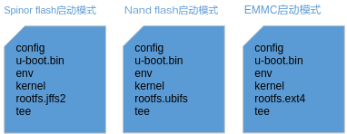
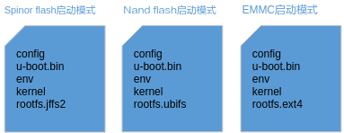

前言
前言
本文档用于指导调试裸烧及非裸烧升级。
说明：
本文仅支持 musl 工具链arm-openeuler-linux-musleabi。本文以Hi3516CV610为例，未有特殊说明，Hi3516CV608与Hi3516CV610内容一致。
与本文档相对应的产品版本如下。
本文档（本指南）主要适用于以下工程师：
- 技术支持工程师
- 软件开发工程师
在本文中可能出现下列标志，它们所代表的含义如下。


裸烧使用说明
操作准备
操作准备如下：
- 编译镜像，如表1所示；
- 制作升级包；
- 存储介质准备（FAT32格式的SD卡）。
表 1 升级所需的镜像
裸烧流程
裸烧流程如图1所示。

操作过程
-
根据表1，安全启动或非安全启动镜像编译，具体编译方法请参考《Hi35xxVxxx 安全启动使用指南》，有如下注意事项。
eMMC启动的uboot中SDIO驱动默认是开启的，其他启动介质编译uboot镜像时，需进入SDK版本包third_party/u-boot目录中的u-boot-xxx源码目录下，使用make ARCH=arm CROSS_COMPILE=arm-openeuler-linux-musleabi- menuconfig打开下面的宏开关。
Device Drivers ---> MMC Host controller Support ---> [*] MMC/SD/SDIO card support ---> [*] Secure Digital Host Controller Interface support [*] Support SDHCI ADMA2 Vendor driver support ---> [*] SDHCI support for the Soct SD/SDIO/eMMC controller Product ---> [*] auto update [*] auto sd update [*] auto sd update is in sdio0 [*] auto usb update [*] auto update adaptationeMMC启动的单板会被限制为只能使用的sdio1作为sd卡升级端口，auto sd update is in sdio0这个宏不会显示在menuconfig下，因为sdio0已经被emmc占用了，无法使用；如果使用的是其他启动介质单板，uboot下默认使用sdio0作为sd卡升级端口；如果需要使用sdio1，则关闭下面的宏开关：
-
根据使用的启动方案制作升级包。
-
非安全启动和Non-TEE安全启动升级包制作方法
创建config文本文件，并把和镜像匹配的bootargs和bootcmd拷贝至其中，分区大小单位需要大写，格式如下：
-
SPI NOR Flash
-
SPI NAND Flash:
-
eMMC:
升级包参考如下：

- u-boot.bin为image_map脚本生成的boot_image.bin镜像；
- env为XXX_env.bin镜像；
- kernel为Linux Kernel镜像；
- 对于非安全启动和Non-TEE安全启动，u-boot.bin为image_map脚本生成的boot_image.bin镜像。
-
-
TEE安全启动升级包制作方法
创建config文本文件，并把和镜像匹配的bootargs和bootcmd拷贝至其中，格式如下：
-
SPI NOR Flash
setenv bootargs 'mem=96M console=ttyAMA0,115200 clk_ignore_unused root=/dev/mtdblock3 rootfstype=jffs2 rw mtdparts=sfc:512K(u-boot.bin),512K(env),4M(kernel),10M(rootfs.jffs2),1M(tee)'; setenv bootcmd 'sf probe 0; sf read 0x47000000 0xf00000 0x100000; dcache flush; smc 0xc2fffa00 0x47000000; sf read 0x50000000 0x100000 0x400000; bootm 0x50000000'; sa -
SPI NAND Flash:
setenv bootargs 'mem=96M console=ttyAMA0,115200 clk_ignore_unused root=ubi0:ubifs rootfstype=ubifs rw ubi.mtd=3 mtdparts=nand:512K(u-boot.bin),512K(env),4M(kernel),32M(rootfs.ubifs),1M(tee)'; sa setenv bootcmd 'nand read 0x47000000 0x2500000 0x100000; dcache flush; smc 0xc2fffa00 0x47000000; nand read 0x50000000 0x100000 0x400000; bootm 0x50000000'; sa -
eMMC:
setenv bootargs 'mem=96M console=ttyAMA0,115200 clk_ignore_unused root=/dev/mmcblk0p4 rootfstype=ext4 rw rootwait blkdevparts=mmcblk0:512K(u-boot.bin),512K(env),4M(kernel),96M(rootfs.ext4),1M(tee)'; setenv bootcmd 'mmc read 0 0x47000000 0x32800 0x800; dcache flush; smc 0xc2fffa00 0x47000000; mmc read 0 0x50000000 0x800 0x2000; bootm 0x50000000'; sa
升级包参考如下：

- u-boot.bin为image_map脚本生成的boot_image.bin镜像；
- env为xxx_tee_env.bin镜像；
- kernel为Linux Kernel镜像；
- tee为image_map脚本生成的tee_image.bin镜像。
-
-
-
插入存放有升级包的FAT32格式的SD卡至SDIO0卡槽，按住UPDATE按键，启动单板。
进入u-boot升级流程时，松开UPDATE按键即可，例如，当出现类似操作示例打印log，即代表已进入u-boot升级流程。
说明：
- 把升级包放置在SD卡前，请先把SD卡进行格式化操作。
- 升级包里的u-boot或boot_image镜像名必须为u-boot.bin，升级包里的镜像名必须和bootargs一致，如4M(kernel)，则Linux内核镜像名应为kernel；
- 可烧写多个文件系统镜像；
- ubifs文件系统镜像的文件名中必须包含ubifs字符串，其他镜像的文件名中必须不能包含ubifs字符串。
- ext4文件系统镜像的文件名中必须包含ext4字符串，其他镜像的文件名中必须不能包含ext4字符串。
操作示例
- 格式化SD卡为FAT32格式；
- 将操作过程中制作的升级包拷贝到格式化好的SD卡中。格式化SD卡具体方法请参考《外围设备驱动 操作指南》附录；
-
裸烧打印以及打印说明如下（以SPI NOR Flash非安全启动举例）：
//bootrom读取u-boot.bin至内存并执行 //读取升级配置文件 [0]=u-boot.bin start=0x00000000 end=0x0007ffff size=0x00080000 [1]=env start=0x00080000 end=0x000fffff size=0x00080000 [2]=kernel start=0x00180000 end=0x00e7ffff size=0x00d00000 [3]=rootfs.jffs2 start=0x00e80000 end=0x0167ffff size=0x00800000 //读取并烧写u-boot.bin spinor erase... spinor write... //读取并烧写env spinor erase... spinor write... //读取并烧写kernel spinor erase... spinor write... //读取并烧写rootfs.jffs2 spinor erase... spinor write... //保存环境变量 Saving Environment to SPI Flash... Erasing SPI flash...Writing to SPI flash...done OK //接下来将自动启动新系统
操作中需要注意的问题
- SD卡必须格式化成FAT32格式；
- 若SD卡有多个分区时，升级包必须放在第一个分区，否则扫描不到升级包；
- u-boot或boot_image镜像名称必须为u-boot.bin；
- 裸烧会自动保存config中的bootargs和bootcmd环境变量；
- 没有config文件时，仅会烧写bootrom读取的u-boot.bin镜像。
设置eMMC扩展CSD寄存器
如果用SD卡裸烧的方式烧写，u-boot会利用自带的eMMC驱动对eMMC扩展CSD寄存器进行设置，不需要额外设置。但如果使用烧录器方式进行烧写，则需要烧录器配置eMMC扩展CSD寄存器。此部分主要说明在烧录器操作界面上，需要配置 eMMC 的哪些寄存器及寄存器的值。
eMMC 器件包含有BOOT1、BOOT2和 USER DATA分区，同时支持 n_RST 管脚和下电复位。boot 从 USER DATA分区启动，所有镜像数据都烧录到 USER DATA分区，同时只支持 n_RST 管脚复位器件，因此，烧录器必须按下表配置寄存器的值，否则单板无法启动。
此寄存器用于配置 eMMC 在 boot 模式下的总线宽度。用户需要根据硬件设计使用的总线宽度进行设置（0x1：4-bit 0x2：8-bit）。 |
||
177寄存器配置如表1所示。
表 1 177寄存器配置说明
RESET_BOOT_BUS_CONDITIONS(nonvolatile) |
||
- 必须在烧录之前完成eMMC 扩展寄存器的配置。
- 部分烧录器可能不支持设置扩展CSD寄存器的功能，需烧录器厂家支持。
具体的设置由于各厂家的eMMC烧录器不同而存在差异，请参考烧录器手册来配置。
非裸烧升级使用说明
操作准备
升级操作准备如下：
- 编译镜像，参考表1；
- 制作升级包；
- 存储介质准备（FAT32格式的SD卡或U盘）；
升级流程
升级流程如图1所示。

操作过程
-
根据表1编译镜像，安全启动或非安全启动镜像编译，具体编译方法请参考《Hi35xxVxxx 安全启动使用指南》，有如下注意事项。
-
编译u-boot镜像时，需进入u-boot源码目录下，使用make ARCH=arm CROSS_COMPILE=arm-openeuler-linux-musleabi- menuconfig打开宏开关。
Device Drivers ---> MMC Host controller Support ---> [*] MMC/SD/SDIO card support ---> [*] Secure Digital Host Controller Interface support [*] Support SDHCI ADMA2 Vendor driver support ---> [*] SDHCI support for the Soct SD/SDIO/eMMC controller Product ---> [*] auto update [*] auto sd update [*] auto sd update is in sdio0 [*] auto usb update [*] auto update adaptationuboot下默认使用sdio0，如果需要使用sdio1，需要关闭下面的宏开关：
-
对于非裸烧场景，如果不希望使用UPDATE按键，可以屏蔽u-boot按键识别代码，修改board/vendor/hi3516cv610/hi3516cv610.c中函数is_auto_update为：
int is_auto_update(void) { writel(0x11f1, 0x10260028); writel(0x11e1, 0x1026002c); writel(0x11e1, 0x10260030); writel(0x12a1, 0x10260034); writel(0x11e1, 0x10260038); writel(0x11e1, 0x1026003c); writel(0x11e1, 0x10260040); writel(0x11f1, 0x10260044); return 1; }配置完成后，即u-boot启动默认会进入sd（sdio0）升级流程。
或者将函数is_auto_update为：
-
-
根据使用的启动方案制作升级包。
-
非安全启动和Non-TEE安全启动升级包制作方法。
创建config文本文件，并把和镜像匹配的bootargs和bootcmd拷贝至其中，分区大小单位（K、M）需要大写，格式如下：
-
SPI NOR Flash
-
SPI NAND Flash
-
eMMC
升级包参考如下：

- u-boot.bin为image_map脚本生成的boot_image.bin镜像；
-
env为XXX_env.bin镜像
-
kernel为Linux Kernel镜像；
- 对于非安全启动和Non-TEE安全启动，u-boot.bin为image_map脚本生成的boot_image.bin镜像。
-
-
TEE安全启动升级包制作方法
创建config文本文件，并把和镜像匹配的bootargs和bootcmd拷贝至其中，格式如下：
-
SPI NOR Flash
setenv bootargs 'mem=96M console=ttyAMA0,115200 clk_ignore_unused root=/dev/mtdblock3 rootfstype=jffs2 rw mtdparts=sfc:512K(u-boot.bin),512K(env),4M(kernel),10M(rootfs.jffs2),1M(tee)'; setenv bootcmd 'sf probe 0; sf read 0x47000000 0xf00000 0x100000; dcache flush; smc 0xc2fffa00 0x47000000; sf read 0x50000000 0x100000 0x400000; bootm 0x50000000'; sa -
SPI NAND Flash
setenv bootargs 'mem=96M console=ttyAMA0,115200 clk_ignore_unused root=ubi0:ubifs rootfstype=ubifs rw ubi.mtd=3 mtdparts=nand:512K(u-boot.bin),512K(env),4M(kernel),32M(rootfs.ubifs),1M(tee)'; sa setenv bootcmd 'nand read 0x47000000 0x2500000 0x100000; dcache flush; smc 0xc2fffa00 0x47000000; nand read 0x50000000 0x100000 0x400000; bootm 0x50000000'; sa -
eMMC
setenv bootargs 'mem=96M console=ttyAMA0,115200 clk_ignore_unused root=/dev/mmcblk0p4 rootfstype=ext4 rw rootwait blkdevparts=mmcblk0:512K(u-boot.bin),512K(env),4M(kernel),96M(rootfs.ext4),1M(tee)'; setenv bootcmd 'mmc read 0 0x47000000 0x32800 0x800; dcache flush; smc 0xc2fffa00 0x47000000; mmc read 0 0x50000000 0x800 0x2000; bootm 0x50000000'; sa
升级包参考如下：

- u-boot.bin为image_map脚本生成的boot_image.bin镜像；
- env为xxx_tee_env.bin镜像；
- kernel为Linux Kernel镜像；
- tee为image_map脚本生成的tee_image.bin镜像。
-
-
-
插入存放有升级包的FAT32格式的SD卡（SDIO0）或U盘，按住UPDATE按键，启动单板，升级系统。
进入u-boot升级流程时，松开UPDATE按键即可。例如：当出现类似升级示例打印log，即代表已进入u-boot升级流程。
说明：
- 把升级包放置在SD卡或U盘前，请先把SD卡或U盘进行格式化操作。
- 升级包里的u-boot或boot_image镜像名必须为u-boot.bin，升级包里的镜像名必须和bootargs一致，如4M(kernel)，则Linux内核镜像名应为kernel；
- 如果镜像文件不存在则不升级对应项；
- 支持升级多个文件系统镜像；
- 如果想继续使用u-boot中的环境变量bootargs和bootcmd，则不需要准备config文件；
- ubifs文件系统镜像的文件名中必须包含ubifs字符串，其他镜像的文件名中必须不能包含ubifs字符串。
- ext4文件系统镜像的文件名中必须包含ext4字符串，其他镜像的文件名中必须不能包含ext4字符串。
操作示例
分段升级
分段升级适用于低内存芯片平台，当内存较小且升级的文件系统较大时可考虑打开此选项，打开此选项时只需要使用16M大小的内存 buffer，反之升级文件将占用文件大小的内存。
操作过程如下：
-
打开分段升级宏(CONFIG_VENDOR_UPGRADE_BY_SEGMENT)
-
打开升级开关和识别sd卡、usb所需要的宏开关，和操作过程步骤1一致。
升级示例
- 将u-boot镜像烧写到flash（spinor或nand）中或直接下载到内存中运行；
- 格式化SD卡或U盘为FAT格式；
- 将操作过程中制作的升级包拷贝到格式化好的SD卡或U盘中。格式化SD卡或U盘具体方法请参考《外围设备驱动 操作指南》附录；
- 开发板上电，u-boot启动，开始自动升级。
-
升级打印以及打印说明如下（以SPI NOR Flash非安全启动举例）：
//读取升级配置文件 [0]=u-boot.bin start=0x00000000 end=0x0007ffff size=0x00080000 [1]=env start=0x00080000 end=0x000fffff size=0x00080000 [2]=kernel start=0x00180000 end=0x00e7ffff size=0x00d00000 [3]=rootfs.jffs2 start=0x00e80000 end=0x0167ffff size=0x00800000 //读取并烧写u-boot.bin spinor erase... spinor write... //读取并烧写env spinor erase... spinor write... //读取并烧写kernel spinor erase... spinor write... //读取并烧写rootfs.jffs2 spinor erase... spinor write... //保存环境变量 Saving Environment to SPI Flash... Erasing SPI flash...Writing to SPI flash...done OK //接下来将自动启动新系统
操作中需要注意的问题
- SD卡或U盘必须格式化成FAT格式；
- 若SD卡或U盘有多个分区时，升级包必须放在第一个分区，否则扫描不到升级包；
- 升级u-boot会自动保存config中的bootargs和bootcmd环境变量。